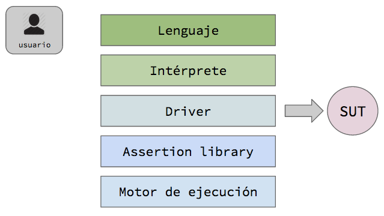
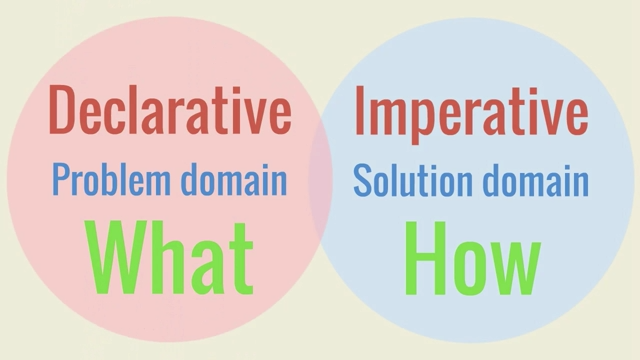

Behaviour Driven Development
## BDD - Behaviour Driven Development
* Definición: *Metodología* de desarrollo de software en el que *se especifica y diseña* una aplicación *mediante la descripción de su comportamiento* para un observador externo.
## BDD - Detalles
* Foco en los comportamientos del negocio: el "por qué" detrás del código.
* Es acerca de compartir comportamientos esperados entre todos los miembros del equipo.
* Guía el desarrollo
* Uso de ejemplos en múltiples niveles para crear un entendimiento compartido
## BDD - En pocas palabras
* **Usar ejemplos** en múltiples niveles para crear un **entendimiento compartido** para entregar **software de valor**
BDD - Usando ejemplos
## Ventajas
* Exploramos los requerimientos
* Descubrimos lo que no sabemos
* Clarificamos ambigüedades
* Identificamos asunciones y desentendidos
# BDD - Entendimiento compartido
# BDD - Software de valor
## BDD - Beneficios en su aplicación
* Focaliza el esfuerzo
* Reduce el desperdicio y los requerimientos no alineados
* Genera software de mayor valor
* Permite hacer aplicar cambios de modo seguro
* Releases más confiables
* Reduce el costo de mantenimiento
## BDD - Desafíos para su aplicación
* Requiere compromiso y colaboración de Stakeholders, BA o Product Owner
* Writing good scenarios takes practice
#Cucumber
##Describe comportamiento en texto plano
#Cucumber
* Es un framework de BDD
* Genera documentación del comportamiento de la aplicación
Arquitectura de prueba

Componentes de Cucumber
Features
Step Definitions
Helpers
#Implementaciones
Ruby, Java, Groovy, JavaScript, .NET, PHP, C++
Donde estamos parados

Nuestros mandamientos
1. Nuestros Cucumber features deben conducir nuestra implementación, no reflejarla
2. Nuestros Cucumber features deben ser escritos antes que el código que implementan dichos features
##Componentes de un .feature
##feature
Describe brevemente el comportamiento esperado
##scenario
Es un caso particular de prueba
##scenario outline
Es un template para realizar un conjunto de pruebas
##background
Es uno o más pasos que se ejecutan antes de todos los scenarios
##Given
Es un paso que indica que se dio una determinada precondición
##When
Es un paso que indica que ocurrió un determinado evento
##Then
Es un paso que indica que entonces deberá haber una consecuencia
##Ey! No importa el orden ; )
#Herramientas
* ##Capybara + Watir (u otro)
* ##FactoryGirl
##Capybara + Watir (u otro)
* Es un framework que ayuda a realizar tests de aceptación sobre aplicaciones web, simulando como un usuario real interactua con ella (web automation)
* Es agnostico acerca del motor que estamos utilizando para correr los tests
* WATIR = Web Application Testing in Ruby
#FactoryGirl
* Es una librería que permite definir objetos (en Ruby) para utilizar como información para nuestros tests
* Permite tener fixtures de los cuales valernos para los tests que tenemos definidos
##Casos de prueba
_Shopbeam_
#Muchas gracias!
##Preguntas?